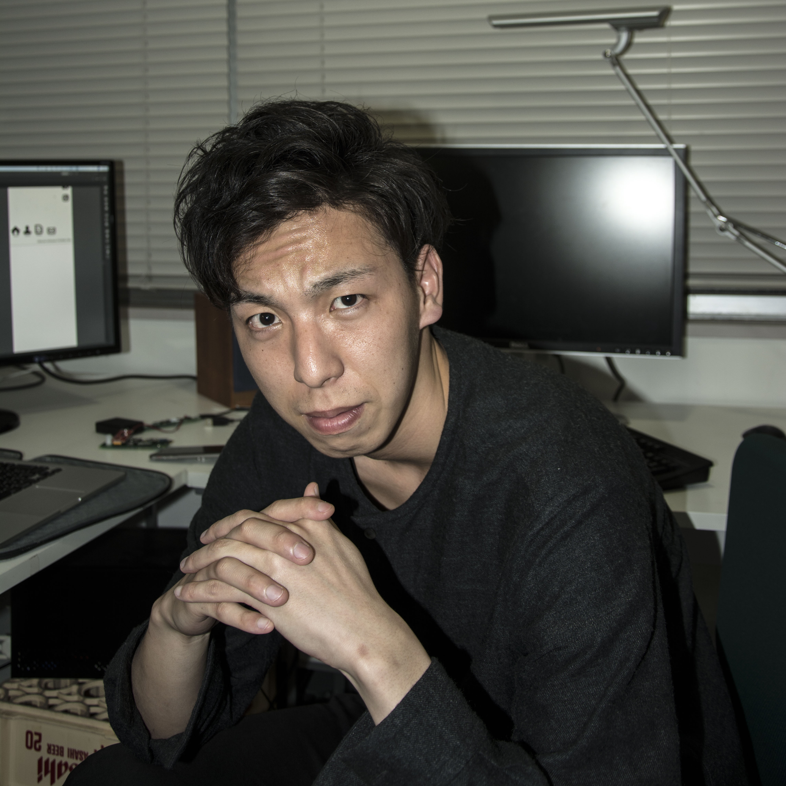

profile

- 1994年07月15日生まれの、22歳
- 静岡県静岡市出身の石川大輔です。
- 好きなことは体を動かすことで、学生時代には
- サッカーとハンドボールを部活でやっていました！
- interest technology MachineLearning,tv局
- skill arduino,unity,c++,openframeworks
- history 03/2013 清水東高等学校 卒業
- 04/2013 法政大学 デザイン工学部システムデザイン学科 入学
- 03/2017 法政大学デザイン工学部システムデザイン学科 卒業
- 04/2017 法政大学大学院 デザイン工学研究科 システムデザイン専攻 入学